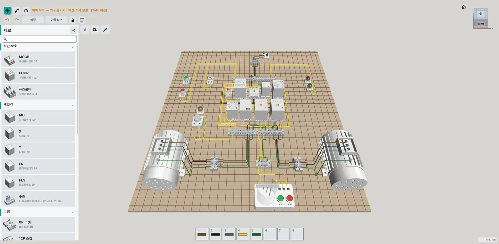
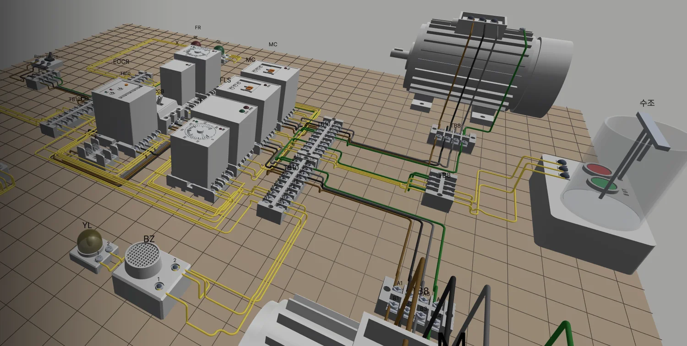
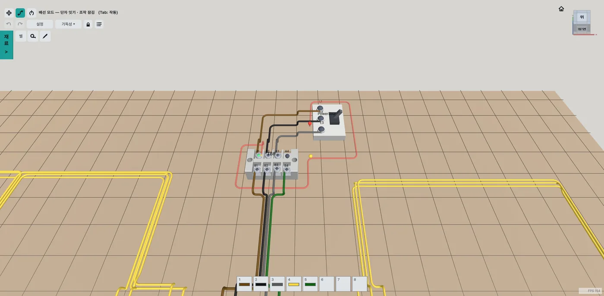
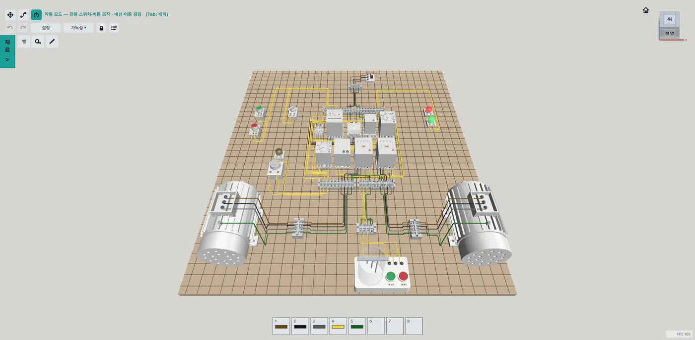
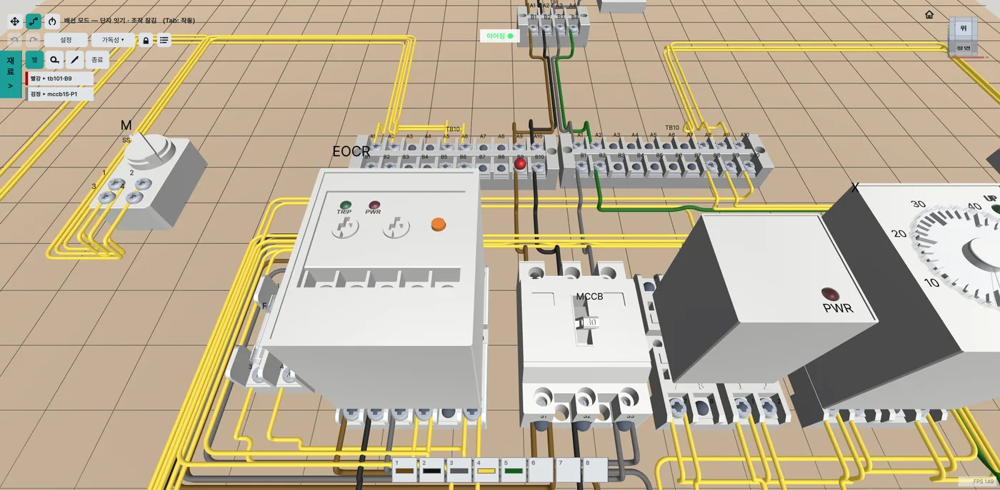
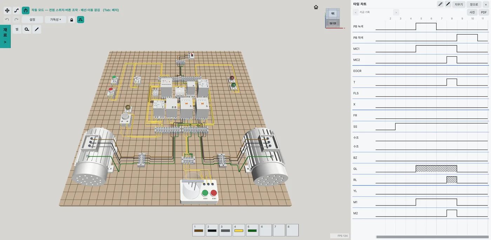
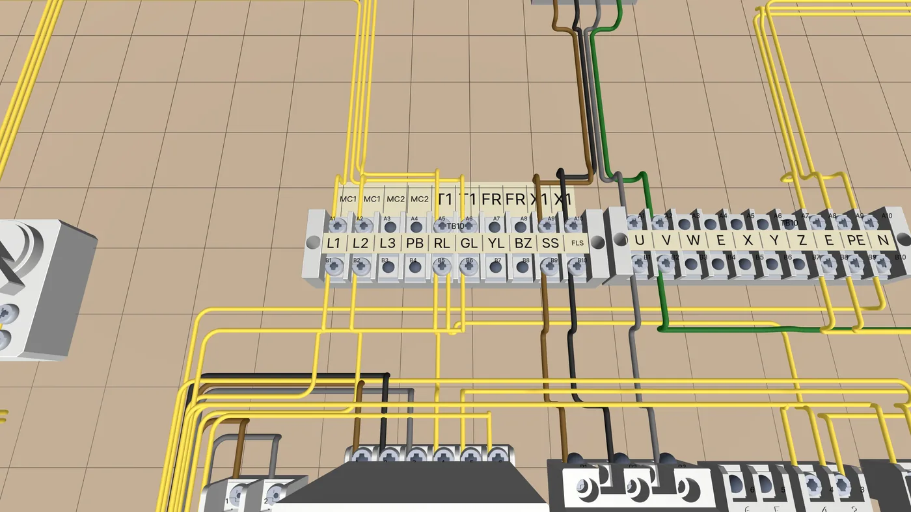

배치 모드
재료창에서 기구를 꺼내 판에 놓기
드래그로 옮기고 R로 90° 돌립니다. 릴레이와 타이머는 소켓 위에 놓으면 꽂힙니다. 복사, 붙여넣기, 여러 개 선택도 됩니다.

ELECTRIC SIM
전기기능사 실기 기구를 판에 놓고, 단자를 전선으로 잇고, 전원을 넣어 회로가 어떻게 움직이는지 봅니다.
Windows 64비트 · zip 압축을 풀어 바로 실행

Tab을 누를 때마다 세 모드가 차례로 바뀝니다. 실기 순서 그대로 기구를 놓고, 잇고, 전원을 넣습니다.
드래그로 옮기고 R로 90° 돌립니다. 릴레이와 타이머는 소켓 위에 놓으면 꽂힙니다. 복사, 붙여넣기, 여러 개 선택도 됩니다.

시작 단자와 끝 단자를 누르고, 그 사이에 경유점을 찍어 경로를 정합니다. 전선 색은 황·갈·흑·회·녹 다섯 가지이고, 단자 하나에 2개까지 연결합니다.

전원 스위치, 차단기, 버튼 순서로 조작합니다. 배선한 그대로 회로를 계산해 램프와 전동기가 반응합니다. 타이머 다이얼, EOCR 트립과 리셋, 수조 물 넣기와 빼기도 직접 조작합니다.

배선을 확인하고, 동작을 기록하고, 판 위에 이름을 적습니다.

프로브 두 개를 단자에 놓으면 이어져 있는지 벨과 표시로 알려 줍니다. 램프나 코일 같은 부하를 사이에 둔 단자는 이어진 것으로 보지 않습니다.

작동 모드에서 일어난 일을 목록과 타임 차트로 봅니다. 이전 기록 3개까지 다시 볼 수 있고, 사진이나 PDF로 내보냅니다.

단자대, 소켓, 기구, 판에 테이프를 붙이고 칸마다 이름을 적습니다. 테이프 글을 동작 기록의 기구 이름으로 쓸 수도 있습니다.
재료창에서 분류별로 찾거나 이름으로 검색합니다.
| 차단·보호 | 배선용차단기(MCCB), EOCR, 유리관 퓨즈 홀더 |
|---|---|
| 계전기 | 전자접촉기(MC), 릴레이(X), 타이머(T), 플리커릴레이(FR), 플로트레스 스위치(FLS), FLS 수조 |
| 소켓 | 8P 소켓, 12P 소켓 |
| 조작·표시 | 푸시버튼(녹·적), 셀렉터 스위치(SS), 램프(적·녹·황·백), 부저 |
| 단자대 | 10P+10P, 8P |
| 부하 | 3상 유도전동기(3단자, Y-Δ 기동용 6단자) |
과제 모드와 정답 채점이 없습니다. 회로를 자유롭게 만들고, 이은 그대로 움직이는 모습을 보며 익히는 프로그램입니다. 전선 색이 달라도 막지 않고, 통전 결과도 같습니다.
electric-sim.zip을 받아 압축을 풀고 electric-sim.exe를 실행합니다.
Windows 64비트용입니다. 맥과 모바일 버전은 없습니다.
아니요. 채점과 과제 모드는 없습니다. 도면을 보고 직접 배선한 뒤 동작을 확인하는 연습에 씁니다.
프로그램을 사용하면 익명 사용 통계(접속 시간)와 오류 정보 수집에 동의한 것으로 간주합니다.
키·조작 튜토리얼 PDF에 사진과 함께 정리되어 있습니다.